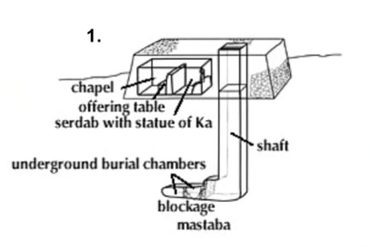
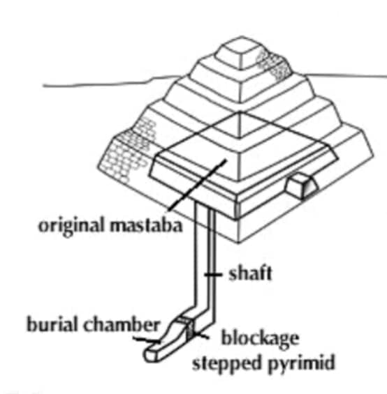
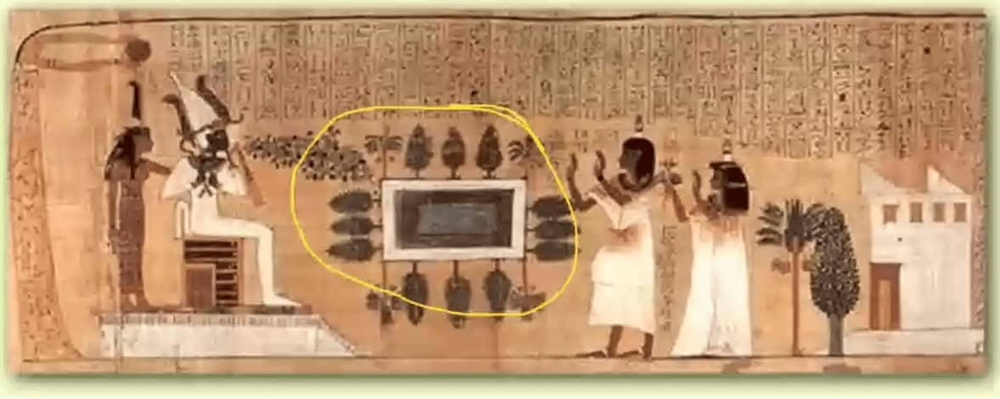
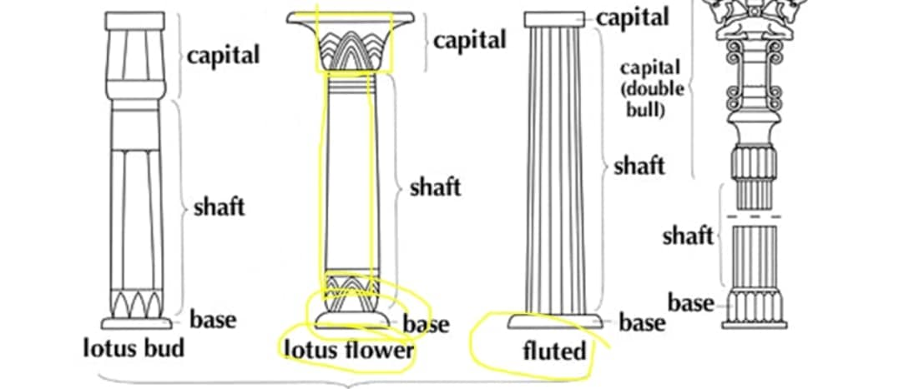

2. Umění starověkého Egypta
- 3000 př. n. l. → vznik systému písma
-
nejstarší organizované sídla (Egypt, Mezopotámie, Kréta) →
první státy
GEOGRAFIE
- NIL → důležitá řeka
- doprava a zemědělství
-
bacha na umístění → podle směru toku Nilu
- Horní Egypt na jihu
- Dolní Egypt na severu
NÁBOŽENSTVÍ
-
polyteismus (mnoho-božství)
-
PRINCIP 4 ČÁSTÍ ČLOVĚKA
-
jméno, tělo,KA (nesmrtelný dvojník), BA (životní
energie)
-
KA
- žije v SOŠE
- má lidské potřeby
-
přichází po smrti do místnosti s
váhou srdce a pravdy
-
nejdůležitější okamžik člověka je
SMRT → důraz na posmrtný život
- prolínání vizuální stránky a textu
ARCHITEKTURA
-
MASTABA
- vstupní místnost pro KA
- vedle je místnost pro oběti

-
STUPŇOVITÁ PYRAMIDA
- více mastab na sobě
- faraon Snofru se snaží postavit, ovšem padá
- poté se snaží o jehlan, ovšem je příliš špičatá
-
třetí pokus → širší základna → funkční
- červený vápenec → červená pyramida

-
PYRAMIDY
-
CHUFUOVA → 3 pohřební komory
SOCHAŘSTVÍ
- dělíme na 2 typy
-
OFICIÁLNÍ
-
KA musí přežít → použití tvrdých materiály (žula,
diorit)
-
vysunutá levá noha, výrazné u mužů (u žen menší)
- ruce v pěst
-
výraz tzv. ARCHAICKÝ ÚSMĚV
-
rovný výraz, před dokončením se upravily
koutky úst
- využito později i v Řecku
-
VEŠEBTY
- sochy k pohřbu
- podživotní velikost
- dřevo, polychromované (barevné), skleněné oči
Malířství
-
3 zobrazovací principy
-
HIERATICKÁ PERSPEKTIVA
-
velikost postavy se odvíjí od sociálního
postavení
-
PÁSOVÁ PERSPEKTIVA
- rozdělení do pásů, vyprávění v pásech
-
VYKLÁPĚNÁ PERSPEKTIVA
- př. stromy kolem bazénu
- prostor je rozložen na plochu

- vykročená noha je vždy ta vzdálenější
-
hlava z profilu, oko zepředu, ramena zepředu, boky z profilu
- ženy mají jedno ňadro z boku, muži mívají erekci
CHRÁMY
- pylony
- práce se světlem
- sloupy se začínají dělit na patku, dřík a hlavici

Obrázky
- popsat vývoj od mastab k nejnovějším
-
Sennedžem
- vybudoval kanál
- pás
- spojení s textem
-
Maska
-
Nefertiti
- protažený krk, polychromie